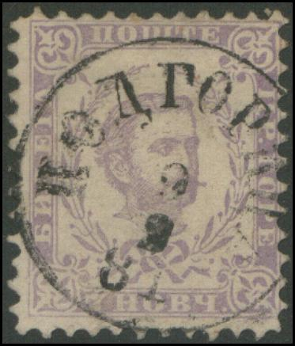
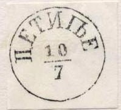

{kind=link}



Return To Catalogue - Montenegro, miscellaneous - Yugoslavia
Note: on my website many of the
pictures can not be seen! They are of course present in the
catalogue;
contact me if you want to purchase the catalogue.
1 n (Hoby) blue 2 n yellow 2 n green 3 n green 3 n red 5 n red 5 n orange 7 n red 7 n grey 10 n blue 10 n red 15 n brown 15 n red-brown 20 n brown 25 n grey 25 n brown 25 n blue 30 n brown 50 n blue 1 F green 2 F lilac
Many different perforations exist for these stamps. I have seen wrappers and postcards in the same design (see below).
Value of the stamps |
|||
vc = very common c = common * = not so common ** = uncommon |
*** = very uncommon R = rare RR = very rare RRR = extremely rare |
||
| Value | Unused | Used | Remarks |
| 1 n | c | c | 1874 |
| 2 n yellow | ** | ** | |
| 2 n green | * | c | 1898 |
| 3 n green | ** | ** | |
| 3 n red | * | c | 1898 |
| 5 n red | ** | * | |
| 5 n orange | * | * | 1898 |
| 7 n red | * | c | |
| 7 n grey | c | c | 1898 |
| 10 n blue | * | c | |
| 10 n red | c | c | 1898 |
| 15 n brown | * | c | |
| 15 n red-brown | * | * | 1898 |
| 20 n | c | c | 1894 |
| 25 n grey | RR | RR | |
| 25 n brown | * | c | |
| 25 n blue | c | * | 1898 |
| 30 n | c | * | 1894 |
| 50 n | * | * | 1894 |
| 1 F | * | *** | 1894 |
| 2 F | * | *** | 1894 |
Overprinted '1493 1893' and cyrillic text
2 n yellow 3 n green 5 n red 7 n red 10 n blue 15 n brown 25 n brown
Value of the stamps |
|||
vc = very common c = common * = not so common ** = uncommon |
*** = very uncommon R = rare RR = very rare RRR = extremely rare |
||
| Value | Unused | Used | Remarks |
| 2 n | *** | *** | |
| 3 n | * | ** | |
| 5 n | * | ** | |
| 7 n | * | ** | |
| 10 n | *** | ** | Red or black overprint |
| 15 n | *** | *** | |
| 25 n | ** | *** | Red or black overprint |
Postal stationery, I have seen:
with no overprint: 2 n red, 3 n green, 3 n black, 5 n red, 5 n
black, 7 n violet and 10 n blue;
overprinted '1493 1893' and cyrillic text: 2 n yellow, 3 n green,
5 n red and 7 n violet.

Apparently a genuinly imperforate stamp (not a cut from postal
stationery)


Images reprodcued with permission from the Forgeries idenfication
site of Bill Claghorn.
In the genuine stamps, the 'P' at the right hand side has a tail and there is a large stop behind the 'P' of 'PP'. The prince has an Adam's apple. In the above forgeries, the 'P' has no tail, there is a small stop behind the 'PP' and the prince has no Adam's apple. The forgeries are badly perforated and a typical cancel is 4 rings (as above) or a cancel consisting of dots.
Other forgeries:
Fiscal stamp (Court Stamp) in the same design:
I have seen the values 1 n red, 2 n red, 3 n red, 4 n red, 5 n red, 10 n lilac, 50 n lilac and 1 F blue.


1 n blue and brown 2 n lilac and yellow 3 n brown and green 5 n green and brown 10 n yellow and blue 15 n blue and green 20 n green and blue 25 n blue and yellow 30 n lilac and brown 50 n brown and blue 1 F red and black 2 F brown and black
Value of the stamps |
|||
vc = very common c = common * = not so common ** = uncommon |
*** = very uncommon R = rare RR = very rare RRR = extremely rare |
||
| Value | Unused | Used | Remarks |
| 1 n | c | * | |
| 2 n | c | * | Exists with inverted center: RR |
| 3 n | c | * | Exists with inverted center: RR |
| 5 n | c | * | |
| 10 n | c | * | |
| 15 n | c | * | |
| 20 n | c | ** | |
| 25 n | c | ** | |
| 30 n | c | ** | |
| 50 n | c | ** | |
| 1 F | c | *** | |
| 2 F | c | *** | |
I've seen postal stationery in the same design in the value 5 n green and brown.
Even though these stamps are quite common, they have been forged. I know that the forger Fournier made forgeries of these stamps. I do not know the distinguishing characteristics.

A page from the Fournier Album with Montenegro forgeries.

1 h blue 2 h lilac 5 h green 10 h red 25 h blue 50 h green 1 K brown 2 K brown 5 K yellow
These stamps have perforation 12 1/2. Imperforate stamps are unfinished remainders (they exist of all values).
Two imperforate 5 h stamps
Value of the stamps |
|||
vc = very common c = common * = not so common ** = uncommon |
*** = very uncommon R = rare RR = very rare RRR = extremely rare |
||
| Value | Unused | Used | Remarks |
| 1 h | * | * | |
| 2 h | * | ** | |
| 5 h | * | * | |
| 10 h | * | * | |
| 25 h | * | * | |
| 50 h | * | ** | |
| 1 K | * | *** | |
| 2 K | ** | *** | |
| 5 K | *** | *** | |
Overprinted 'Constitution 1905' and cyrillic text in several colours:
1 h blue (red overprint) 2 h lilac 5 h green (red overprint) 10 h red 25 h blue (red overprint) 50 h green (red overprint) 1 K brown (red overprint) 2 K brown (red overprint) 5 K yellow
This overprint exists in two types, the word 'Constitution' differs in size in these two types (17 mm or 15 mm). Several 'errors' with the overprint in the wrong colour (black, red, violet, green, blue) exist, they are all very rare. Some printing errors also exist (* to ***). In each sheet of 100 stamps of the second type, once the errors 'Coustitition' ('n' inverted), 'Constitutton' (one 't' instead of 'i'), 'Constitu on' ('ti' missing).
Value of the stamps |
|||
vc = very common c = common * = not so common ** = uncommon |
*** = very uncommon R = rare RR = very rare RRR = extremely rare |
||
| Value | Unused | Used | Remarks |
| Both types | |||
| 1 h | * | * | |
| 2 h | * | * | |
| 5 h | * | * | |
| 10 h | * | * | |
| 25 h | * | * | |
| 50 h | * | * | |
| 1 K | ** | ** | |
| 2 K | *** | *** | |
| 5 K | *** | *** | |
Forged overprints for Montenegro as can be found in 'The Fournier
Album of Philatelic Forgeries', reduced sizes.


1 p yellow 2 p black 5 p green 10 p red 15 p blue 20 p orange 25 p blue 35 p brown 50 p violet 1 K red 2 K green 5 K brown
These stamps have perforation 12 1/2.
Value of the stamps |
|||
vc = very common c = common * = not so common ** = uncommon |
*** = very uncommon R = rare RR = very rare RRR = extremely rare |
||
| Value | Unused | Used | Remarks |
| All values | c | c | |


1 p black 2 p lilac 5 p green 10 p red 15 p grey 20 p olive 25 p blue 35 p brown 50 p violet 1 Pe red 2 Pe green 5 Pe blue
These stamps have perforation 12 1/2.
Value of the stamps |
|||
vc = very common c = common * = not so common ** = uncommon |
*** = very uncommon R = rare RR = very rare RRR = extremely rare |
||
| Value | Unused | Used | Remarks |
| 1 p to 25 p | c | c | |
| 30 p to 5 P | * | c | |
1 p orange 2 p lilac 5 p green 10 p red 15 p grey 20 p brown 25 p blue 35 p orange 50 p blue 1 Pe brown 2 Pe violet 5 Pe green
These stamps have perforation 12.
Value of the stamps |
|||
vc = very common c = common * = not so common ** = uncommon |
*** = very uncommon R = rare RR = very rare RRR = extremely rare |
||
| Value | Unused | Used | Remarks |
| 1 p | c | * | |
| 2 p | c | * | |
| 5 p | c | c | |
| 10 p | c | c | |
| 15 p | c | * | |
| 20 p | c | * | |
| 25 p | c | * | |
| 35 p | *** | *** | |
| 50 p | c | * | |
| 1 P | c | * | |
| 2 P | * | * | |
| 5 P | * | * | |
From end of 1918 onwards, Montenegro used the stamps of Yugoslavia.
{kind=link}
{kind=link}
{kind=link}